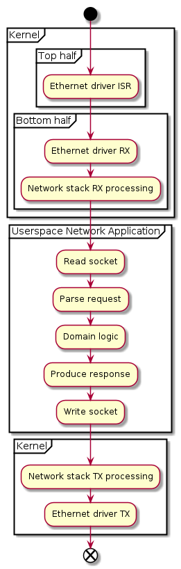

Threading¶
Section author: Mattias Rönnblom <mattias.ronnblom@ericsson.com>
Introduction¶
This chapter explains how data plane applications tend to use operating system threads to get work done, and that in an as resource-efficient, parallel and low-latency manner as possible.
The DPDK approach to threading is by no means unique to DPDK. Similar patterns for how to distribute fast path processing across threads are used in other data plane platforms and application, such as Open Data Plane, Open vSwitch and fd.io VPP. To the author’s knowledge, there are no alternatives that are able achieve data plane type characteristics on top of a general-purpose operating system kernel. 3 Therefor, since the DPDK approach is the prototypical data plane threading model, its chapter is named Data Plane Threading, although it contents is very much DPDK-centric.
The DPDK threading model provides excellent performance characteristics, but at the cost of somewhat difficult-to-deploy and difficult-to-understand applications, among other things.
The DPDK threading model is a source of much confusion, and many a misunderstanding and surprise. More generally, the DPDK-stipulated architecture may seem complex, awkward, and comes with a set of drawbacks. It does not make much use of kernel or C library-level services, such as functions for load balancing and concurrency, accelerator and network I/O hardware abstraction and associated drivers, memory management, time and timer management, and thread synchronization.
In this book, the terms parallelism and concurrency are used with two distinctly different meanings. Please refer to the glossary definitions.
How DPDK-based applications use threads to achieve parallelism, and how threads usually are not the vehicle for concurrency is different from how things are often done in for example Java, Go or C++ 6 applications.
Equally different, and in part the result of, or the reason for, the DPDK threading model, is the choice of synchronization primitives, inter-thread messaging mechanisms, and work scheduling in a DPDK-based application, compared to an application designed in the UNIX tradition.
This chapter leaves out concurrency and work scheduling. This topic will be covered in a separate chapter.
Basic Concepts¶
This section provides an overview of the most relevant building blocks, primarily in the form of kernel-level services, involved in assembling an application’s threading model.
Threads¶
Thread is short for thread of control. From a data perspective, it primarily consists of a stack and a set of registers, including a stack pointer and a program counter. A thread represents an execution of a sequence of programmed instructions.
A thread can be either be scheduled and otherwise managed by the operating system kernel, an operating system thread, and or by an user space entity, in case it’s a user mode thread.
There are two types of kernel threads; the user space thread and the kernel thread.
Kernel threads would be more appropriately named kernel-only threads, since all threads may run kernel code, in supervisor mode, as a part of a system call. Kernel threads are created by the kernel and only runs in the context of the kernel.
Each user space process has one or more user space threads.
Multithreading and multiprocessing are the only ways for an application to utilize multiple CPU cores in parallel.
Multithreading may also be used as a way to achieve concurrency. Such a use of operating system threads comes with some limitations in scalability (i.e., the number of concurrent tasks) and reduced efficiency (e.g., increased context switch overhead). For moderately-concurrent applications with long runtimes per input stimuli, this model is often more than suffient, performance-wise.
User Mode Threads¶
A user mode thread, sometimes shortened to user thread, is a thread which is managed not by the kernel, but by some userspace library, programming language virtual machine or runtime, or the application itself.
Such thread management includes thread switching; both replacing relevant CPU registers and the stack stack from the old user mode thread to the new, and process of selecting the next thread to run.
The cardinality between the user mode thread and the underlying operating system threads varies. An operating system thread may house a number fixed set user mode threads, or N number of user mode threads “floats” (are migrated between) over M number of operating system thread.
The N:M model is an attempt to have the cake, and eat it. It tries to maintain a decent level of efficiency (i.e., thread-related overhead) and scalability (allowing for many concurrent threads), while maintaing the sequential, convenient programming model of multithreading.
User mode thread context switching is generally less costly than an operating system context switch, and while maintaing a stack can still be a significant cost, if it’s made dynamic in size one can potentially have much more user mode threads than you can have operating system threads, allowing user mode threads to be used to implementation concurrency. Dynamically-sized stacks may not be possible to implement without compiler support.
Switching between tasks in the form of two user mode threads is still going to be much more expensive than switching between two tasks without requiring the stack to be maintained (e.g., as in an event-driven architecture). A stack provides a mean to write a simple linear program, instead of the event loop type design’s requirement to before each instance there is a need to wait for some future event (a timeout, or a response from some remote process), relevant state for future processing much be explicitly save, and then restored again when the event occurs. This is required since the thread may be repurpose to work on some other task meanwhile.
A well-behaved user mode thread implementation has many concern it most take into consideration. For example, it must avoid a situation where a single user mode thread starve other user mode threads scheduled on the same operating system thread, and in general to maintain some level of fairness (or absolute prioritization) between user threads.
To avoid the whole application to grinding to a halt in the face of a series of blocking system calls, such calls are either forbidden or only allowed via a proxy. Such a proxy may, for example, spawn (or allocate from a thread pool) a new operating thread to allow the original thread to be reused. Such a procedure will much increase the overhead related to system calls, but there are less naive approaches that partly mitigates these costs.
From the point of view of user thread-to-user thread context switching, user mode threads implements cooperative multitasking, although no exlicit yield calls may be required on the application source level. Thus, a user thread is never preempted and replaced with another user thread, but the underlying operating system thread may well be.
Implementations¶
User mode threads were used in many early POSIX thread libraries.
The commonly-used synonym green threads originates from early versions of Sun’s Java virtual machine (JVM), which used this technique to implementation Java-level threads. It’s no longer used in Java. While user mode thread are still popular, the term green thread itself has largely fallen out of use, in part likely due to the bad reputation earned from the early Java days.
One of the more recent implementations of user mode threads is in the form of Golang and its Goroutines. Fibers in the Boost C++ library are another contemporary example. Coroutines, in particular so-called stackful such, are close cousins to user mode threads.
DPDK includes with an example implementation of user mode threads. It is not a part of the DPDK APIs.
Process Scheduler¶
All modern operating system implement multitasking. Traditionally, the “task” was a process, but since the advent of multithreading 5, operating system process schedulers operate on the level of threads instead, where the traditional single-threaded process is just a special case. Even though the contemporary scheduler manages threads, the term process persist, in the name of the function.
The Linux kernel uses a concept of a task, much in line with the term multitasking. A task may be either an operating system thread or a process (or something in between). To the Linux kernel, two threads in the same process are just two tasks sharing virtual address space (among other things). Two processes are two tasks that do not share anything, except potentially various namespaces (e.g., a network namespace).
The kernel function responsible to manage multitasking is the process scheduler. Its job is to take the system’s runnable threads, and distributed their execution over the system’s CPU cores.
The task of process scheduling comes with a number of (often conflicting) goals:
Make good use of hardware resources (e.g., CPU cores and caches), in an attempt to improve overall system throughput, by load balancing available threads over the available cores.
Meet scheduling latency requirements for all applications. This in turn allows the application be responsive-enough for a human user, or a machine, in case of machine-machine interaction.
Lay out the system’s computational tasks in time and on cores in manner to remain as energy efficient as possible. Operate the CPU cores and interconnect at a as low frequency as possible, and temporarily discontinue the use certain cores entirely, allowing them to go sleep.
The process scheduler determines which thread runs where, and for how
long. To maintain the concurrency illusion and give each
thread a fair share of the CPU, in situations where not all threads
can be run in parallel, the kernel may preempt
the execution of a particular thread, and switch in another thread in
its place. This is called an involuntary context switch. The voluntary
counterpart is a context switch induced by the thread’s own action, in
the form of a blocking system call. The most common case is the
process waiting for some event (e.g., using select()), in UNIX
usually arriving on one of a set of file descriptors, or a certain time (e.g., with usleep()).
The sched_yield() system call may be used to hint the kernel the
thread considers the time of the call a good time for a context
switch. 4
Designing a process scheduler that remains efficient and provides the
proper characteristics across a large set of scenarios it needs to
handle is a challenging task indeed. In Linux, the Completely Fair
Scheduler (CFS), which handles threads configured with the
SCHED_NORMAL (also known as SCHED_OTHER) scheduling policy,
shoulders most of this responsibility. Often, a small subset of the
system’s threads are configured with a real-time scheduling
policy. See the section on Real Time Scheduling Policies for
more information.
A good general-purpose process scheduler needs to maintain certain soft real-time characteristics. More specifically, it will attempt to categorized applications into interactive or batch (or background) processing types. The scheduler will attempt to assure interactive applications remain responsive.
On the surface, this may sound like it would make it a good fit for packet processing application as well.
However, it is not. The CFS type scheduler is tuned for the human time scale. The machinery, for example the length of time slices (i.e., the chunks of time a thread is allowed to run), is designed for “normal” desktop and server applications, where the size of one task is measured in the order of tens of milliseconds, as opposed to the data plane, where tasks are on the order of microseconds. Similiar, the latency budget and jitter requirements also differ in the order of magnitudes.
A commmon scenario in case fast path processing is mixed with other types of threads is where CFS shows a tendency to prioritize the execution of a non-vital, periodically running, management plane over a busy, “batch-looking”, packet processing thread.
In a data plane application, certain groups (or classes) of threads should have absolute, or at least near-absolute (to avoid starvation), priority over some other group of threads. This is not possible to express in CFS, which relies the traditional UNIX process nice value for prioritization. The nice value is a weight of how much CPU time a thread should be allocated, compared to some other thread, competing for the same CPU resources.
Thread Migration¶
To maintain good CPU cache utilization, and to reduce process scheduler-related synchronization overhead, a general-purpose process scheduler (e.g, the Linux CFS scheduler or FreeBSD ULE) primarily operate on the level of the CPU core. A thread is assigned to a certain core, and need to be explicitly migrated from that core to some other core in order to rebalance load. The scheduler considers such migration on a periodical basis, or whenever a core becomes idle.
Thus, a potential scenario is that even though there are idle CPU cores in a system, a runnable CFS task may be kept waiting for “its” core to become available.
For applications that are of an interactive type, but what they interact with is a human, such delays are typically not long enough to be noticeable. However, for threads that run the data plane fast path, the delays, which may in the order of 10s or 100s of milliseconds, are likely prohibitively high.
The CFS scheduler can be tuned to partly mitigate this issue, but such tuning the affect the whole system.
Thread Affinity¶
Real Time Scheduling Policies¶
Context Switches¶
Wake Up Latency¶
Many modern CPUs, especially large x86_64 cores, come equipped with the possible to enter sleep states, when not being used. There are a usally a number of different CPU core och package-level sleep states. The trade off is being the cost, in terms of energy and time, to enter and exit (“wake up” from) a sleep state, and the benefit of residing in that state, in terms of energy savings, compared to some other states (deeper, more shallow, or indeed no sleep at all).
It is the kernel that decides what sleep state to enter, by executing
the appropriate instructions (e.g., HLT or MWAIT on the AMD64
ISA). During light load, the wake up latency adds to
wall-clock latency experienced by a packet traversing the
network function.
These benchmarks gives some indication of what wake up latencies to expect on a server processor. For example, on a Skylake-generation Intel Xeon core in the C6 state, the deepest core-level sleep state, the wakeup latency is ~80 us. In the more shallow C1E state, the latency is less than ~16 us, but the power savings are also much less noticable.
A failure to use CPU power management can lead to very poor energy efficiency, especially for CPUs operating at high frequencies.
This topic will receive a more in-depth treatment in a future chapter on energy efficiency.
Standard Threading¶
Overview¶
This section attempts to describe the de-facto standard architecture for network applications. This book will refer to this as the standard threading model, or just the standard model 2. This section’s focus is the use of threads, for parallelism and concurrency, but to give a more complete picture, the use of other operating system services is covered as well.
A network application built per the standard model consists of a user space process working concert with the operating system kernel and its network stack to implement some kind of network service.
Considering that the standard model is very different from how the same functionality would be implemented in data plane fast path application based on DPDK (and most other data plane platforms), one might wonder what this section is doing in this book.
A description and discussion of the properties of this architectural pattern explains why while it’s a good fit for many network applications, it’s typically not suitable for the high-performance, low-latency data plane applications of this book. This sets the stage for the section on data plane threading.
The backdrop of this section is a UNIX-like operating system, but could just as well be any contemporary general-purpose operating system family (e.g., Microsoft Windows). The resulting architecture looks much the same, as do the obstacles to achieving the appropriate performance characteristics.
There are variation within the standard threading model. For example, some programming language virtual machines take a somewhat DPDK-like approach (e.g., Golang and its use of usually per-core worker operating system threads). The use of fibers, coroutines, or green threads - all variations of the same theme - also address some of the same concearns as the data plane threading model discussed in the next section.
In the author’s opinion, none of these variations significantly improves the suitability for the standard model to serve in a data plane fast path role.
Benefits and Drawbacks¶
The standard model is a balance between performance, security and simplicity.
The upsides of the standard model include:
Well-known and thus generally not a source of surprise for new developers.
Allows the use of operating system threads for both parallelism and concurrency, potentially augmented by, for improved efficiency, user mode threading.
The operating system network stack may tasked to solve a large chunk of the application’s problem (e.g., TCP/IP).
A major benefit of the standard model is that few or even none of the mandantory steps of the data plane threading model are required. Such benefits are:
The application process need not run as the superuser (root), or be equipped with any special priviligies.
The kernel provides a stable, secure, hardware abstraction layer, in particular for networking hardware.
NICs or other hardware devices need not be mapped into the process’ address space.
Explicit use of huge memory pages may be replaced with transparent huge pages, or not used at all.
Core isolation may not be needed.
Power management is the concearn of the operating system kernel.
Frequency scaling is done automatically.
CPU cores are put to sleep when not used.
No busy-waiting is required, but rather an application waiting to receive an item of work (or a timeout) using the regular I/O multiplexing mechanisms (e.g.,
epoll_wait(), either directly, or more commonly, via some library or framework.CPU cores may easily be shared by different applications, improving overall utilization.
For multi-threaded applications, load balancing across multiple CPU cores is handled the kernel’s process scheduler.
Standard heap memory allocation mechanism may be used (e.g., libc malloc()).
There are a number perceived and actual pain points of the standard model, when applied to data plane fast path applications:
Kernel network stack overhead.
Process context switch overhead.
System call overhead.
NIC (and other) interrupt handling overhead.
Lack of efficient access to hardware accelerators (e.g., for cryptographic operations or DMA).
Process preemption causing excessive jitter and reduced throughput.
CPU sleep state-related wake up-latencies, especially in low-load scenarios.
Lack of control of CPU frequency scaling, resulting in poor energy efficiency and/or throughput or latency characteristics in cases where system load varies often and quickly.
All benefits and drawbacks are related to performance. No developer ever said, “Let’s build this application the DPDK way. It’s so much easier!”
Software developers should pick the standard model over the data plane threading model as often as they can, for reasons similar to why they drive a Volvo and not a McLaren Formula 1 race car to work. The Volvo-based approach is safer, more inexpensive, more energy efficient, easier to develop, maintain and deploy, requires a much less qualified operator, and allows for relatively friction-free coexistence with other road users. 1
However, developers of data plane fast path applications are, sooner or later, likely to find out they are in fact on the race track, and their competition revs up to 15000 PMs.
Language and Language Runtime Impact¶
The old-school UNIX socket application is written in C, but the limitations of the standard model that are relevant for data plane applications have little to do with the choice of programming language, and indeed anything that happens inside the user space process itself. The process could just as well host a C++ program, a Java program (and its VM) or a Go program (and the Go runtime), and it would still suffer the same (or worse) fate in terms of poor fast path performance characteristics.
Life of a Packet¶
This section attempts to describe the standard model using a set of activity diagrams, each describing the life of a packet.
Life of a packet is a way to explain the workings of a data plane implementation of some sort, for example a router ASIC, by giving an example of how a packet traverse the different parts of the system.
Although the term suggests a biography of a network layer PDU, packet in life of a packet is often used as a shorthand for any kind of input and output of the involved entities.
In the standard model for network applications, the initial stimuli may be a frame. Except for the most low-level applications (e.g., an Ethernet software bridge), for each successive layer, headers are generally stripped off, and the payload may be split into several high-layer PDUs, or merged into a single PDU, or somewhere in between. Such multiplexing and demultiplexing will be ignored here. For simplicity, in the diagrams that follow, one external stimuli is assumed to ripple through the stack, and back out again, in some form, or another. In a real application, this assumption usually does not hold true. For example, an IP fragment may be delayed in the network stack, waiting for the other fragments making up the original packet, until processing may continue to the next layer.
Single Threaded Standard Application¶

Life of Packet for a Single Threaded Application
This diagram shows roughly what steps are performed when processing input and producing output in a typical single-threaded standard model-type network application.
Kernel RX Processing¶
First, an Ethernet frames arrives from the network, and is allocated an entry in one of the NIC’s RX descriptor queues. The kernel receives an interrupt 8, the interrupt service routine (ISR) (or top half) of the Ethernet driver is run, which in turn marks the bottom half interrupt handler to be run. The bottom half runs the Ethernet driver and the rest of the RX path in the network stack. The bottom half generally executes on the same CPU core as the top half interrupt handler, to avoid expensive cache misses.
How much network stack processing is required by the kernel depends on
the type of application. For example, if the the application is a DHCP
server, it may have created a low-level AF_PACKET type socket. In
such a case, it will, without further ado, get the link-layer frame
handed to it.
If the application instead is a HTTPS proxy, and has bound a number of TCP server sockets, the kernel-level processing will be more extensive. If a packet carrying an Ethernet frame, which carries an IP datagram, with a TCP segment destined for a connection established to that server socket arrives, the kernel will terminate TCP, and queue the data in the relevant socket buffer.
Even though the amount of processing varies significantly, the total overhead between socket types is relatively small. This is because all file descriptor-based communication carries a high overhead in the form of system calls and context switches.
Userspace Processing¶
As data arrives on the socket buffer, the socket’s (one or more)
file descriptors will be marked active,
which in turn will wake up the relevant application threads, blocking
in epoll_wait() (or some equivalent I/O multiplexing system call),
if they aren’t already running.
In case Linux receive packet steering (RFS) is used, the kernel- and userspace-level processing generally happens on the same CPU core, improving cache locality and thus performance.
Multithreaded Standard Application¶
For applications that work with many sockets (e.g., the typical TCP-based server), multiple operating system threads may be used to increase parallelism, and to avoid having a set of long-running requests block all other processing (i.e., for concurrency), in a very straigh-forward manner.
Maintain a one-to-one relationsship between threads and connections (and file descriptors).
As new connections arrive, create a new thread or allocate a thread from a set existing, idle threads (i.e., a thread pool).
This architecture quickly break down as the number of connections grow. The Linux kernel struggles as the number of threads grow into the thousands. The large number of threads will also cause a large number of involuntary preemptions, and context switches, which in turn reduces the efficiency.
A mitigation strategy for this issue is to use some form of user mode threads. See the section on User Mode Threads for more information on such threads. It’s generally possible to have more user mode threads than operating system threads, allowing for more concurrent connections. The next issue that occurs if scalability needs be extended further, is the large amount of memory required by the many user mode thread stacks. Depending on the stack sized requried and whether or not those stacks are dynamically or statically sized, this issue may occur sooner, or later.
The next step in the evolution of such a design, or an upfront alternative, is to use a pattern similar to traditional single-threaded UNIX event-driven programming, but with one event loop instance for each every thread. In such a scenario, threads are used only for parallelism, and the event loop is there to solve the concurrency problem.
For applications where all input arrive on a single input socket file descriptor, but involves (by the standards of this book) very heavy domain logic processing, performance gains may be achieved by dispatching an incoming packet to to one among a number of available worker threads. The efficiency in terms of clock cycles/packet will be somewhat reduced, but the application-level capacity will be increased, since requests may be processed in parallel. Often, the workers need to ship off the resulting packet (e.g., a response) back to some singleton thread, which will write on the fd. By the very least, the worker threads needs to synchronize to produce output.
An issue with the “fan out” pattern is that the work threads, when not doing anything useful, will need to blockingly wait, on a mutex lock, a condition variable, a sempahore, or a file descriptor. The cost of for a thread dispatching incoming items to sleeping workers is steep indeed. The workers could busy-wait, as could the input dispatcher thread, but that would be big step toward data plane threading model, including many of the drawbacks and lacking some of the benefits.
Multithreaded Receive¶
In UNIX, read() or recv() operations on file descriptors are
thread safe, but rarely make sense to access in parallel from multiple
threads for byte stream-type input, since one part of a message may
end up on one thread, while the other part is read by some other
thread. For UDP sockets, or other SOCK_DGRAM or SOCK_SEQPACKET
type sockets, where PDUs are delivered atomically (i.e., in one system
call), a design with multiple threads blocking on the same fd may be
feasable.
![@startuml
start
partition "Kernel" {
partition "Top half" {
:Ethernet driver ISR;
}
partition "Bottom half" {
:Ethernet driver RX;
:Network stack RX processing;
}
}
partition "Userspace Network Application" {
:Read socket;
:Dispatch to worker;
fork
:Parse request;
:Domain logic;
:Produce response;
fork again
:Parse request;
:Domain logic;
:Produce response;
fork again
:Parse request;
:Domain logic;
:Produce response;
end merge
:Write socket;
}
partition "Kernel" {
:Network stack TX processing;
:Ethernet driver TX;
}
end
@enduml](../_images/plantuml-84cdf3eac82ca44a8b24d330808a1d47d4110265.png)
Life of Packet for a Multithreaded Standard Application
As mentioned, there are also other patterns, where instead each worker handles a connection or a set of connections file descriptors, and there is no need for a hand-off. In that case, the activities look more like the single-threaded example.
In most cases, link and network layer processing is left to the kernel and its TCP/IP stack. The kernel’s network stack is relatively rich in features, but, because it’s generic and feature rich, much slower than a stack optimized for a certain use case, or class of use cases.
System Calls¶
In case the kernel’s network stack, or any eBPF extensions, are unable to do all the processing required for an application, the packet needs to be handed to a user space process for further processing, as per the life of a packet diagrams.
This hand-off between the kernel and a user space process usually happens by means of one or more system calls.
System calls are rarely invoked directly from application code or the data plane platform, but rather via libc (or some other language-specific runtime environment, like the Go runtime).
A system call incur a number of costs, including:
A mode switch between CPU user and supervisor mode (a change in privilege level, to use x86 terminology), and back again.
A switch between the user stack, and a kernel stack, and back again.
Pollution of CPU caches, where user application cache lines are evicted and replace with kernel-related data.
In some cases, flushing of certain caches to mitigate CPU security-related flaws.
The direct cost of a system call (i.e., the amount of clock cycles spent in the call) starts in the range of hundreds of clock cycles, and many system calls are much more expensive than that. The indirect cost, primarily in the form of cache pollution, may also be significant, causing application code run at lower-than-otherwise instructions per cycle (IPC) (i.e., run slower).
Exceptions are calls implemented implemented using virtual dynamic
shared objects (vDSOs), such as gettimeofday() on most
architectures. vDSO calls accesses memory shared between
the kernel and user space, and thus are much less expensive and
does not require a mode switch.
AF_XDP¶
Process Context Switches¶
Latencies¶
This section makes an attempt to quantifiying the cost of various operations commonly occuring when the standard model is employed.
These latencies were measured on an Intel Xeon 6230N CPU (Cascade Lake), operating at 2.30 GHz. The system was running Linux 5.15.
The purpose of the benchmark data is only to give an order-of-magnitude indication of what processing latencies to expect. The cost of these operations varies significantly between different CPUs, NICs, kernel versions and configurations, and the details of the application’s behavior.
The costs covered here are the direct cost, and thus does not include indirect cost such kernel-induced cache pollution. The indirect costs are much harder to quantify.
Operation |
Direct Cost [clock cycles] |
|---|---|
UDP socket |
6000 |
TCP socket |
8000 |
Intra-core intra-process context switch w/ |
2000 |
Intra-core inter-process context switch w/ |
2500 |
Intra-core intra-process context switch w/ |
5500 |
The measurements are the result of micro benchmarks, which means they generally represent something like a lower bound for the cost for the same operations, performed in the context of a real application.
Context Switch Benchmark¶
The context switches in the context switch benchmarks are made on an active core, where a thread is replaced by another thread. This procedure is repeated.
In the intra-process context switch, the threads belong to the same process, and in the inter-process context switch case, they do not.
The sched_yield benchmark variants use a combination of
sched_yield() and a real-time scheduling policy to assure that the
context switch actually occurs.
The benchmark marked pthread_cond_wait() uses a POSIX condition
variable to notify the other thread, and force a context switch.
pthread_cond_wait() may be a suitable base for an internal work
distribution mechanism within a multithreaded standard model
application.
For process-external I/O, a standard model application would likely
use select() (or the equivalent) to wait for new
events. select(), poll(), and a little more so
epoll_wait(), further adds to the cost, compared to a
pthread_cond_wait()-based solution.
Inter-core Context Switches¶
Context switches which involve putting a thread scheduled on one core to sleep, and waking up a thread scheduled on some other currently-asleep core are significantly more expensive. Such involves an inter-process interrupt (IPI), and potentially also a significant amount of time spent waiting for the core to wake up from a sleep state.
Generic inter-core context switches benchmarks are not very meaningful, since the so much depend on application behavior and the CPU sleep state-related configuration and DVFS.
For example, in the Intel Idle Linux kernel driver, the Skylake C1E is specified as having a wakeup latency of 10 us. Assuming a CPU core operating at 2,2 GHz, this shallow sleep state adds the equivalent of 22000 clock cycles to the context switch latency. A core in C6, the deepest core sleep state, adds ~10x more.
The future chapter on energy efficiency will discuss how CPU sleep states may be employed, without having a too severe effect on other performance characteristics.
Socket Benchmarks¶
The cost quoted for accessing UDP and TCP sockets is the sum of the
cost of receiving 100 bytes worth of data, plus the cost of sending
the equal amount. Generally, sending a little cheaper than receiving
data. In the TCP case, the write() results in an actual TCP
segment being sent.
Larger packets (or chunks of data) are somewhat more costly, but it
primariy shows as indirect cost (e.g.., the send() call doesn’t
take that much longer time, but the user-kernel copy with pollute the
cache, leading to an indirect cost).
SOCK_RAW type sockets have a performance similar to UDP
sockets. However, for link-layer sockets, recent versions of the Linux
kernels provides an alternative, much more efficient, mechanism to
retrieve the Ethernet frames: AF_XDP sockets. For more
information, see the section on AF_XDP.
An option for process-internal thread messaging is a combination of a
ring buffer (or similar queue) in shared memory, and an event
fd to allowing waking up a sleeping receiver thread. This approach
allows process-internal message transmission and reception overhead to
be significant lower compared to a solution based on sockets, UNIX
pipes, or anything else that requires a system call for sending and
receiving a message. However, the system calls related to event fd
management, the I/O multiplexing system call (e.g., select()), and
the context switches are very expensive. Still, this approach may be
used to distribute (“fan out”) a flow of packets to multiple worker
threads.
Contrary to popular belief, sendmmsg() and recvmmsg() are only
moderately more efficient (if at all).
Performance Comparison¶
An standard model-type application utilizing the BSD Sockets API for I/O, and processing on average 8 packets per context switch, for example, will have a base overhead of ~7000 clock cycles/packet. This may be compared to the cost of retrieving and sending a packet using an DPDK Ethdev, which is in the order of magnitude of a hundred clock cycles.
This may seems like an unfair comparison, since the application may
well make use of part of the Linux kernel networking stack
functionality. For example, it may need to terminate IP and UDP, makes
use of the kernel-level SNMP MIB counters and
netfilter firewall rules. However, a special-purpose TCP/IP stack will
outperform the Linux stack. This is not because Linux stack is poorly
implemented, but rather because it’s very feature rich. Crossing the
user-kernel boundary is also a very significant cost, including the
requirement to make a memory copy (unless AF_XDP is used).
7000 clock cycles is not an issue for something heavy-weight, like the average Kubernetes micro service (which typically aren’t very micro at all), which will spend one or more orders of magntitude more cycles on processing higher layers (e.g., terminating gRPC and the actual service domain logic). Even for high touch data plane applications, 7000 clock cycles are prohibitly expensive and likely more than the per-packet budget for all processing.
Data Plane Threading¶
Overview¶
This chapter will describe the DPDK threading model. Since the DPDK model serves well in the roll of a prototypical threading model for data plane fast path applications, the chapter’s title is relevant. For simplicity, the model will be refered to as the DPDK model, although
The recipe for building and deploying an application adhering to the DPDK threading model, in its most basic form, is roughly as follows:
Determine which of the system’s CPU cores will be dedicated to the DPDK application process.
Clear the application-owned cores from as many user space threads, and kernel space threads, top and bottom half interrupt handlers as possible.
At the time of DPDK application invocation, inform the application which cores to use.
In the application’s
main()function, call DPDK’s rte_eal_init(), which, among other things, spawns as many EAL threads as there are application-owned CPU cores 9, and pin each thread to one of the cores.Have the fast path packet processing EAL threads run continously and indefinitely, polling NIC receive queues and other sources of work.
This section will dwell into the details of this model, its pros and cons, and its variants and extensions.
Benefits and Drawbacks¶
The benefits of the DPDK threading model, and indeed DPDK as a whole, can succinct summarized to: excellent runtime performance.
DPDK does not add anything in terms of expressiveness; any task that can be achieved by a DPDK-based data plane fast path application can also be done so by an application built in accordance to the standard model, only it’s standarda application will have lower throughput, higher latency, and generate more heat in the process.
In summary, the DPDK threading model has the following benefits:
Arriving packets (and other items of work) are dealt with quickly, and without incurring the cost of context switches or system calls in the process.
Packets may be passed between cores forming a pipeline, using low-overhead, shared memory-based message passing, without requiring any context switches and system calls.
Processing of a packet (or some other item of work) is generally not interrupted. In particular, an EAL thread is never preempted and replaced with a peer EAL thread. This, in turn, means:
Packet processing jitter is kept at a minimum, and soft real-time deadlines can be met.
Efficient and thread-safe, but non-preemption safe, shared data structures may be used.
The drawbacks for the basic model are, in short:
The busy-polling EAL threads continuously use all CPU time available leading to:
Poor energy efficiency at low or medium load, since used cores are constantly kept at maximum operating frequency and out of any sleep states.
Reduced performance for SMT systems, since an EAL thread will use significant physical core resources, even when no useful work is performed (i.e., being a noisy SMT neighbour to another thread running on the same physical core).
The use of core isolation leads to cores allocated to the DPDK application cannot be shared (pooled) with other applications in the system, which in turn leads to worse overall hardware resource utilization.
It is not possible to dynamically scale up application to use more CPU cores than it has EAL threads.
Dynamically scaling down to fewer cores requires discontinuing the use of certain EAL threads, which generally is supported by DPDK libraries and device drivers, but may pose a challenge for the application itself, which potentially rely on per-lcore objects (e.g., timers, RCU memory reclamation, or event device and ethernet device ports/queues), which cannot be left unattended.
For CNFs, core isolation somewhat complicates container-level scheduling.
DPDK’s basic threading model can be extended to mitigate, or even eliminated, these problems. Such improvements will be covered in this chapter, and other future chapters, for example a chapter on power management.
EAL Threads¶
The EAL thread is the workhorse of DPDK-based data plane fast path applications.
An EAL thread is an operating system thread created and managed by the DPDK’s core platform library - the EAL. All EAL threads are spawned at EAL initialization, and lives throughout the lifetime of the DPDK process.
Logical Cores¶
In general, the term logical core refers to an entity, usually a piece of hardware, behaving like a CPU core from the point of view of the software program it is running. The hardware-software interface of which the logical core is a key part is called an instruction set architecture (ISA).
A logical core may be realized as a hardware thread, a full core, or in exceptional cases, a software-emulated core - all of which are functionally equivalent, from a software point of view. 10 This useful term is rarely used, as is a synonym: the virtual core.
When the term logical core is used in a DPDK context - usally abbreivated to lcore - it means something related but distinct from the generic, hardware-level concept.
The DPDK lcore is a only a different name for an EAL thread. The reason for the lcore designation is that an EAL thread is usually pinned to one particular logical core, dedicated to its use.
When this book uses the abbreviated lcore form, the DPDK meaning of the word is implied.
<rte_lcore.h> is the primary API for lcore-related operations, such as EAL thread iteration and status queries.
Main and Worker Lcores¶
As a part of the EAL initialization (i.e., the
rte_eal_init() call), the calling thread is repurposed as an
EAL thread, and designated the main lcore.
The EAL default is to assign the lowested-numbered lcore the main
lcore role. The default may be overridden with the --main-lcore
EAL parameter.
By default, EAL, during its initialization, spawns one operating
system thread for each logical core in the main() thread’s
original processor affinity mask, beyond
the first. All such EAL threads are a worker lcores.
For example, if a DPDK application is invoked with 12 cores in the
main() function thread’s affinity mask, rte_eal_init() will, barring any EAL
Parameters saying otherwise, create 12 EAL threads. One of these EAL
threads is the main lcore, using the caller’s operating system thread,
and the 11 others are worker lcores, each associated with a newly
created operating system thread.
The number of worker lcores may be, and usually is, reduced compared to the default. For more information, see the Lcore Affinity and Core Allocation sections.
The RTE_LCORE_FOREACH() and RTE_LCORE_FOREACH_WORKER() macros
may be used to iterate over both the main and the worker lcores, or
just the worker lcores, respectively.
Progammatically or by using EAL Parameters, certain worker lcores may be asked to take the role of a service lcore. See the Service Cores section for details.
Worker Launch¶
EAL threads serving as worker lcores are assigned tasks using the <rte_launch.h> API.
A common pattern is launch a more-or-less permanently running function, and then deal with more fine-grained work scheduling by other means (e.g., a combination of DPDK event devices, DPDK timers and DPDK ethernet devices). See the future chapter on Work Scheduling for more information on this subject.
After having finished initializing the DPDK platform and application, and launched all workers, the main lcore itself may take on some long-runnning fast path task.
#include <rte_eal.h>
#include <rte_lcore.h>
#include <rte_debug.h>
static int
do_work(void *arg)
{
for (;;)
; /* perform fast path work here */
}
int
main(int argc, char **argv)
{
int rc;
unsigned int lcore_id;
rc = rte_eal_init(argc, argv);
if (rc < 0)
rte_exit(1, "Invalid EAL arguments\n");
RTE_LCORE_FOREACH_WORKER(lcore_id)
if (rte_eal_remote_launch(do_work, NULL, lcore_id) != 0)
rte_panic("Failed to launch lcore thread\n");
do_work(NULL);
}
In this very rudimentary example all EAL threads are employed for fast path work.
The basic structure of this program shares a resemblance with one that
calls into POSIX thread API. An important difference that
rte_eal_remote_launch() doesn’t launch a thread, in the sense of
creating it, but rather only assigning an item of work, in the
form of a function to execute, to an already-existing thread.
One way to see DPDK worker lcores, is as a fixed-sized thread worker pool, which works on one task at a time, and where the assignment of tasks is directed at a particular worker, putting the burdon of load balancing the caller. However, in DPDK, the task is often of the never-ending nature, only terminating when some control thread says it’s time for an orderly shut down of the application.
Fast Path Lcores¶
Most or all EAL threads in most DPDK fast path application are assigned tasks with demanding throughput requirements, paired with requirements to keep latency and jitter below some upper bound. This book will refer to such cores as fast path lcores. A DPDK lcore in service in any type or role (i.e., main lcore, worker lcore, or service lcore) may fit this description.
One might argue real-time lcore would be a more suitable designation
for such cores, considering the soft real-time characteristics
requirements prevalent in the data plane domain. However, this term
may had lead the unwary to believe it somehow implied the use of
real-time scheduling policies, or the CONFIG_PREEMPT_RT real-time
Linux kernel patches. Fast path lcores generally do not depend on
neither of those. In addition, the archetypal hard real-time system is
not designed to operate under the kind of system load the fast path
application has to endure. That fact is reflected in the design in
Linux’ RT scheduling policies, discussed in the ref:Real Time
Scheduling Policies section.
The DPDK documentation doesn’t have a word for fast path lcores, although in at least one instance DPDK processing threads and forwarding threads is used. 11
Lcore Affinity¶
By default, the processor affinity of the EAL threads is set is such a manner, that each EAL thread may only be scheduled on one logical core, and that each logical core has exactly one EAL thread pinned to it. In other words, there’s a one-to-one relationship between a DPDK lcore and the underlying hardware logical core.
The set of CPU cores allocated to an application may be, and usually
is, reduced by using EAL command-line parameters (i.e., -c or -l). The default is to use all cores
available in the main() function thread’s original affinity
mask. See the Core Allocation section for more on this
subject.
Most DPDK-based fast path applications are designed with the assumption of a one-to-one relationship between EAL thread and logical core. 14
Peer Preemptable EAL Threads¶
By using the --lcores EAL Parameter, the
default 1:1 mapping between EAL threads and logical cores may be
changed into a M:N relationship. This flag may be used to create
a number of different process scheduling scenarios.
--lcores may be used to include a particular CPU core in the
affinity mask of more than one EAL thread. For example, a 2:1 mapping
may be used, where two lcores are mapped against one logical core.
In case such EAL threads are configured with a normal time-sharing,
preemptible multitasking, scheduling policy (e.g., SCHED_OTHER on
Linux), which is the default, they do not qualify as
non-preemptable.
Preemptable EAL threads suffer severe limitations in terms of what kind of latency characteristics they deliver, and generally can’t be used for fast path packet processing. In addition, they cannot safely use many DPDK APIs. See the section on Non-preemption Safe APIs.
Cooperative Multitasking¶
Peer preemptable EAL threads
coexisting (i.e., are being scheduled) on the same CPU core may be
turned non-preemptable provided they all have the SCHED_FIFO
scheduling policy, the same priority, and use sched_yield() to
yield the CPU in situations when it is safe to do.
Cooperative multitasking allows for the use of EAL threads for the purpose of concurrency (e.g., to run different modules), at the cost of context switching overhead and the significant complexity introduced by the use of a combination of high CPU utilization and real-time scheduling policies. See the section on Real Time Scheduling Policies for more information on the latter.
Floating EAL Threads¶
The --lcores EAL Parameter may be used to
instruct the EAL to include more than one CPU core in one or
more EAL threads’ affinity masks.
Having an EAL thread floating on two or more dedicated cores makes very little sense, since a single thread cannot can’t use more than one core at a time. This scenario will be left aside.
The other use case for floating EAL threads is to have them overlap, either with other EAL threads, or with non-EAL threads, from the DPDK application process, or some other process. In such a scenario, the kernel’s process scheduler attempts to load balance all threads across the cores available to each thread.
Floating threads with a SCHED_OTHER-type scheduling policy will
suffer from the kernel’s inability (or rather, unwillingness) to
migrate such threads quickly from one core, to another.
This behavior, which can be tweaked by means of kernel runtime configuration (e.g., setting a low migration cost), leads to situations where there are runnable floating EAL threads are left waiting, even though there is an idle CPU core in its affinity mask. See the Process Scheduler section for more information.
If the kernel is configured to quickly migrate SCHED_OTHER
threads, or if a real-time scheduling policies, which perform
immediate rebalancing, is used, the fast path application might suffer
from the very thing the migration cost concept of the SCHED_OTHER
policy is trying to address: there’s a cost associated to migration,
primarily in the form of cache misses in core-private CPU caches.
The floating threads approach will have less of a disastrous outcome
if the EAL threads avoid busy-polling, either by using interrupts
relayed over a file descriptor from the kernel, or by calling
usleep() (or similar) at times they have nothing to do. In this
scenario, they are less likely to be considered batch-type thread, and
less likely to be interrupted by threads that are considered
interactive.
Floating and preemptible EAL threads only make sense under very specific circumstances (e.g., in the context of functional tests). The author has trouble imaging a real-world production scenario in which floating EAL threads provides a net benefit.
Lcore Identifier¶
Each DPDK EAL thread and each registered non-EAL thread is assigned process-unique non-negative integer identifier. Lcore id allocation is a task of the DPDK EAL.
This lcore id is in the range from zero to RTE_MAX_LCORE-1
(inclusive).
The DPDK lcore id and the kernel-level CPU id (e.g., CPU number in Linux) usually, but not always, have the same value, for the same logical core.
The lcore id to kernel CPU id mapping may be controlled by means of DPDK command-line arguments.
Thread Local Data¶
The EAL keeps lcore id and other tightly coupled and frequently accessed EAL thread-related data in thread-local storage. Such data includes the EAL thread’s NUMA node and thread’s processor affinity at the time it was created. This caching scheme implies that EAL considers the affinity and NUMA placement as an constant invariants across the DPDK process life cycle.
In addition, many DPDK libraries and PMDs keep per-EAL thread data, usually in the form of a static array indexed by the lcore id.
The DPDK EAL, library and driver per-EAL thread data is also kept for registered non-EAL threads.
Thread Count¶
DPDK has a compile-time upper bound for the number of concurrent EAL
threads, controlled by the RTE_MAX_LCORE. This limit may be
increased, but DPDK reliance on per-thread data effectively prevents
very large numbers of EAL threads. Usually, RTE_MAX_LCORE is set
higher than, but still the same order of magnitude as, the highest
core count system the build is targeting. On POWER and x86_64 builds,
for example, the compile-time default for RTE_MAX_LCORE is 128.
The RTE_MAX_LCORE limit must be set to also accomodate any
registered non-EAL threads.
The rte_lcore_count() function may be used to retrieve the actual
number of lcores. Note however that this count also include
registered non-EAL threads, if any
such have been created.
Invitation Only APIs¶
Certain DPDK APIs and certain kind of DPDK synchronization primitives only be safely used by threads with certain properties.
Lcore Id Only APIs¶
Threads equipped with a lcore id posses special powers, in the sense there are DPDK APIs in where such threads get a preferential treatment, or indeed may be that only one that can safely use them.
For example, the rte_rand() function of the <rte_random.h> API is only MT safe if called from a lcore id-equipped thread.
Only EAL threads and registered non-EAL threads have lcore ids.
For efficiency reasons, DPDK drivers or a libraries often employ per-lcore data structures, usually in the form of an array indexed by the lcore id. Threads without lcore ids may either be not be allowed to call the API, may call it, but suffer worse performance or a lack of MT safety guarantees, forcing external synchronization, or the library may fall back to thread-local storage.
Another reason for an API to require an lcore id is a mere matter of API design. For example, in the original <rte_timer.h> API, a timer wheel was addressed by means of the lcore id of the managing thread.
Non-preemption Safe APIs¶
DPDK includes many synchronization primitives (e.g., the spinlock and the sequence counter) and thread-safe low-level data structures (e.g., the default ring) which are not safe to use for threads which may be preempted. In addition, many higher-level API library and driver implementations (e.g., the timer library, eventdev, and service cores framework) use such constructs in their implementation, and thus also aren’t preemption safe.
The result of a thread calling a non-preemption safe API, and then being interrupted by the kernel during the call, is that it may interfere with the forward progress of (i.e, block) other threads. Such a situation is generally not a threat to functional correctness of the application, but may have disasterous affects on throughput and latency - in particular latency jitter. Simply put, preemption safety is to performance what thread safety is for correctness.
Especially harmful is a case where a running thread suffers an involuntary context switch, and is replaced with a thread which in turn is busy-waiting for previous thread to produce some result. This waiting normally continues until the next involuntary preemption, or the first thread being migrated to a new CPU core, either of which may take 10s to 100s of milliseconds. 13 This scenario is sometimes referred to as lock holder preemption. This book uses the term peer preemption.
Using spinlocks and other non-wait-free
constructs in a user space program may seems like a poor design, but
under the right conditions, this is the most performant solution. With
the DPDK default lcore deployment and isolated cores, under the
assumption that the critical section of a lock (or the
equivalent) is very short, busy-waiting is less costly than issuing a
system call (e.g., select()) and putting the thread into sleep
waiting for some file descriptor to become active, like a non-DPDK
application would have done. This is especially true for
high-contention cases. This subject will be
explored further in the future Synchronization chapter.
EAL threads are normally spared from preemption, and in particular completly safe from peer preemption.
There is at least one other way to avoid preemption, than the method normally employed by the DPDK threading model. It may be perfectly safe for a thread configured with a real-time scheduling policy to use share non-preemption safe data structures with a set of fast path lcores. See also the section on Cooperative Multitasking for more information.
Historically, DPDK API documentation has been lacking in the area of specifying multi-thread safety, preemption safety, and related concerns, such as signal handler safety.
Non EAL Threads¶
In a DPDK-based fast path process, not all threads are EAL threads. Unsurprisingly, the DPDK documentation refers to such threads as non-EAL threads, and this book will stick to that term.
More unexpected is that the EAL may be the source of such non-EAL threads (e.g., the control thread for interrupt handling).
Unregistered Non EAL Thread¶
Threads that are created using non-DPDK API calls (e.g., direct or
indirect calls via non-DPDK libraries to pthread_create()) are
referred to as unregistered non-EAL threads.
Threads created prior to the rte_eal_init() call inherit get the
main() function’s thread affinity,
and after that will get the main lcore’s affinity, which usually means
they are pinned to a main lcore’s CPU core. The affinity settings for
both those cases are less than ideal, since they result in a thread
floating (migrating) into the main and worker lcores’ CPU cores,
threatening their preemption safety.
Unregistered non-EAL threads are best off having an affinity which either coincide with that of DPDK control threads. An alternative approach is to not employ the main lcore as a fast path lcore, but instead use it for running various control threads, in conjunction with the main lcore’s thread.
Threaded Libraries¶
Special care need to be taken for threads created by a non-DPDK library, linked to the DPDK application. A particularly troublesome sub category is libraries that spawn threads “under the hood”, without the application’s knowledge and consent, and where the POSIX thread id is unavailable to the application.
Preferably, the use of such libraries should be avoided. Even outside the context of the data plane, background threads in generic libraries is generally a sign of poor library design.
If such libraries cannot be avoided, care must be take to assure that threads created by it on the behalf of the application receives the appropriate affinity settings and scheduling policy, or otherwise is made to not interfere with the fast path lcores.
Registered Non EAL Thread¶
An unregistered non-EAL thread
may register in the EAL,
by calling rte_register_thread().
One of the powers granted to a registered non-EAL thread is that of any holder of an lcore id: access to DPDK APIs that require the calling thread to have such an identifier. See the Lcore Id Only APIs section for more information.
A registered non-EAL thread may use rte_lcore_id() to retrieve
their lcore id, in the same manner as an EAL thread would.
A registered non-EAL thread is generally not considered an lcore
(i.e., an EAL thread), and the RTE_LCORE_FOREACH() loop macro will
exclude registered non-EAL threads.
However, the EAL-internal represention of a registered non-EAL thread
is an instance of the EAL thread data structure, but with a role
attribute set to ROLE_NON_EAL.
A registered non-EAL thread is a disabled EAL thread, in the sense
rte_lcore_is_enabled() returns false. It serves in the
ROLE_NON_EAL role, if asked by rte_eal_lcore_role().
The lcore count produced by rte_lcore_count() does include
registered non-EAL threads.
There is no way for a registered non-EAL thread to receive launched
tasks (i.e., it cannot be the subject of a rte_launch_task()
call).
For a discussion on why DPDK’s thread-related terminology is not internally consistent, see A Terminology Side Note.
Control Threads¶
Using rte_ctrl_thread_create(), an application may spawn what DPDK
calls a control thread.
A DPDK control thread starts its life as an unregistered
non-EAL thread. The EAL sets control thread’s affinity mask to that of the process original main()
sthread’s affinity mask, at the time it initialized the EAL, but with
all cores used for running EAL threads removed.
An alternative to using this DPDK convenience function for thread
creation, is to rely on standard libc facilities (e.g.,
pthread_create()).
If the control thread needs access to DPDK APIs requiring the caller to possess a lcore id, the control thread needs to register.
Refer to the section on Data Plane Control for more information on what role a DPDK control thread may serve, from a functional or architectural perspective. Note that DPDK itself, and the application, may employ DPDK control threads for other purposes as well.
Control and Fast Path Thread Interaction¶
Control threads may need to interact with fast path lcores for a number of reasons, such as affecting changes in configuration or retrieving various state information (e.g., counters).
Each of the EAL threads normally runs on an isolated core, dedicated for its use. Such luxuries cannot always be afforded mere control threads, which then often instead are deployed floating on a set of cores, shared by other threads, leaving them preemptable.
This section covers two ways to deal with this problem, in an resource efficient and safe manner: either make them non-preemptable, or use preemption safe ways to interact with the fast path lcores.
See also the Non-preemption Safe APIs section.
Non Preemptable Control Threads¶
A straight-forward way to deal with the inability of a preemptable control thread to safely interact with fast path lcores is make them non-preemptable.
The obvious, and maybe also obviously too costly, way is to use a per-control thread isolated core.
Another option is to configure the control threads with real-time
scheduling policy. In case multiple control threads shares the same
CPU core, they should be configured with SCHED_FIFO and the same
static priority, and cooperate in the same manner as described for EAL
threads, described in the Cooperative Multitasking section.
Barring any higher-priority, real-time-priority, long-running threads
scheduled on the same core, the SCHED_FIFO-equipped control
threads will qualify as non-preemptable. See Non-preemption Safe APIs for more information on this subject.
Like always when absolute-priority, real-time scheduling policies are used, care must be taken not to starve other threads, in particular kernel threads bound to particular cores. See the section on Real Time Scheduling Policies for more discussion on the use of real-time scheduling policies in data plane applications.
Preemptable Control Thread¶
Preemptable control threads may be safely used, with careful design of the interaction with the EAL threads, with the use of preemption-safe means of communication.
For simple data types, accessed in a non-transactional manner, C11 atomics, primarily in the form of atomic loads and stores, may be used. Typically, the control thread would atomically store configuration updates, and atomically load state, statistics, trace events, and other information from the fast path data structures.
For updates larger than 64 bits, relying machine-level atomic instructions may not be possible. In that case, a sequence lock may look like a temption option, for data which is often-read from the fast path, and only occasionally written by the control thread. However, a sequence lock is not preemption-safe on the writer side, although the criticial section is usually small, so depending on application it may be an acceptable level of risk. The risk being one or more fast path lcores being unable to make progress. Sequence lock does provide a means to abandoned a failed read transaction, which may be used to allow the thread to make progress, provided it keeps copy of the old data, and using the old data doesn’t threaten application correctness.
Read-copy-update (RCU) may be used to update more elaborate configuration or other data structures, with a set of dependent values.
By default, DPDK rings are not preemption-safe, but when operated in
MP_RTS/MC_RTS or MP_HTS/MC_HTS mode, they are. Such rings a
good option for messaging. A clean, and conservative design is to
interact between the control threads and the fast path lcores only by
means of messaging. It may results in more code, and lower
performance, for control plane signaling-intesive applications. Such a
ring may also be used as a relay, or a very basic deferred-work
mechanism, just passing a function pointer to a fast path
lcore, asking it to perform some action (e.g., an configuration
update) in a preemption-safe context.
Preemptable control threads acquiring locks, whether spinlocks, mutexes or some other kind of blocking mutual exclusion mechanism, shared with fast path lcores causes issues similar that of priority inversion in a real-time system.
Interaction between preemptable control threads and EAL threads may occur in a obvious way. For example, the control thread takes a spinlock to update some table, read some packet counter value incremented by the fast path lcores, or attempts to dequeue elements from a ring which an EAL thread may have written to.
There are also more subtle cases, where the interaction is much less
obvious. For example, it may happen as a side affect of calls to
shared libraries. A call to malloc(), for example, may result in a
POSIX mutex lock being taken by the caller. If the holder is
preempted, and a fast path lcore attempts to allocate memory, it will
be put to sleep and not be awaken by the kernel until the mutex is
released.
More in-depth discussion on this subject will appear in the future Synchronization chapter.
EAL Control Threads¶
The EAL creates a number of DPDK control threads for internal use. They are control threads in the DPDK sense only, not in the sense described in Data Plane Control. They are usually employed in an auxaliary role, and not in the form of a control plane agent.
Interrupt Thread¶
Interrupts cannot be directly received by a user space process. However, there are ways for the kernel to relay this information to a process.
At time of initialization, EAL spawns a control thread for the purpose of relaying this information to other threads in the application.
Other Control Threads¶
There may be other DPDK control threads of a DPDK-internal origin
(i.e., which are not the direct result of an application calling
rte_ctrl_thread_create().
Some examples of modules employing control threads:
vhost library
eventdev RX adapter
vdpa driver
dlb2 driver
Core Allocation¶
A network function hosting a DPDK-based fast path application must include an entity which decides which of the available CPU cores (and the logical cores they present to the software) are to be dedicated, or otherwise used, by the fast path process (as well as other processes). This CPU resource manger may be a part of a more generic resource manager function, which also manages I/O devices, accelerators and memory. Those subjects are left to the future chapters (e.g., Ethernet Devices and Memory Management).
The CPU resource manager described here takes on a task similar to, but much simpler than, that of a Kubernetes scheduler in a Kubernetes cluster, but only internally, in the network function.
The CPU resource manager are best off left outside the fast path application itself, since it deals with system (i.e., network function-wide) concerns. The data plane fast path is likely not the only user of CPU resources. Knowledge about other application processes, their resource requirements, and the mutual priority generally do not belong in fast path application, or even the data plane.
Core allocation also includes steps to assure that the appropriate CPU cores a kept isolated.
The core allocation scheme may be static (e.g., a PNF with purpose-built hardware and a fixed number of CPU cores), or dynamic in regards to the hardware platform properties (core count, CPU cache and NUMA hierarchy, etc).
The CPU resource manager must be equipped with a basic understanding of the fast path application black box constraints, e.g.:
The minimum number of dedicated CPU cores required for fast path lcores.
The maximum number of dedicated CPU cores the fast path application is able to make use of.
In case of a SMT system, how should the hardware threads be employed, e.g. one (or a combination) of the follow options:
Allocate one hardware thread per physical core to the fast path application, and leave the sibling hardware threads idle.
Allocate one hardware thread per physical core to the fast path application, and use the siblings for other non-fast path threads, or enable them in the control thread core mask.
Allocate all siblings of a particular physical core to the fast path, and let it sort out how they are best used (e.g., by digging into the CPU topology via /proc, or just ignore SMT topology).
The minimum and maximum number of shared CPU cores, for data plane control and other control threads.
For a heterogenous system, if small or large CPU cores, or a combination thereof, are preferred.
Usually, one or more cores are reserved for data plane control, control plane, or management plane use, or for the use by DPDK-internal threads, such as the interrupt thread.
Allocation would normally occur during DPDK application startup. See the section on Lcore Affinity for more information. The number of EAL threads created puts an upper limit on how many CPU cores may be utilized by EAL threads. The limit is fixed across a DPDK process’ lifetime.
Which logical cores should be used may be
specified by means of the -l or -c EAL parameters, at
program startup.
Which CPU cores are to be used for the DPDK control threads can also be controlled, by setting the appropriate
initial DPDK process affinity mask. Consider an application eavesdropper run on a system
with 24 cores, numbered 0-23 (inclusive):
taskset -c 1-23 eavesdropper -l 3-23
The taskset utility runs the specified program, with the affinity
setting provided. In this invocation, taskset will set initial
eavesdropper main() thread affinity to include cores numbered 1
to 23. -l 3-23 will instruct EAL, via rte_eal_init(),
to use the logical cores numbered 3 to 23; one EAL threads per CPU
core. Any DPDK control threads created will receive an affinity mask
consisting of logical cores 2 and 3.
Internal Allocation¶
A task related to, but dinstinct from, core allocation is to decide in what role each of the available lcores will serve within the fast path application. This in turn is much related to the application architecture, for example how work scheduling is implemented. The organization of the packet processing pipeline, and the division of concearns between lcores, and the implementation of concurrency is an decidely application-internal questions, and a topic left to future chapters.
Service Lcore Allocation¶
For applications that use the DPDK service cores framework, there is a need to configure a number of the DPDK-managed lcores to be used for running services.
Which lcores are to be used as service cores may specified using EAL parameters. Configuring service cores by command-line options make sense for driver-level service core usage, in particular if said PMD is also instantiated using EAL parameters.
When service cores are used for application-level (i.e., non-DPDK-platform level) services, the conversion of worker lcores to service lcores is likely best managed by the application itself, being an process-internal implementation detail.
Core Sharing¶
Thread Type Summary¶
Type |
Creation |
Has Lcore Id? |
Processor Affinity |
Usually Risks Preemption |
|---|---|---|---|---|
EAL |
Yes |
Almost always pinned to a dedicated core. |
No |
|
Application e.g. via |
Yes |
Unspecified |
Yes |
|
Application e.g. via |
No |
Unspecified |
Yes |
|
EAL or application via |
No |
Original pre- |
Yes |
Service Cores¶
A Terminology Side Note¶
The misleading use of lcore and its derivate terms in DPDK has a historical basis. The terminology dates back to pre-2.0.0 version of the software. In early DPDK incarnations the lcore was a hardware logical core drafted into service as a DPDK lcore, and was represented by and in various data in the core DPDK framework (the EAL), libraries, and PMDs.
When the affinity requirement was relaxed in DPDK 2.0.0, the lcore and related names were kept, even though the DPDK lcore was no longer necessarily tied to a logical core. The lcore was now just another word for an EAL thread, according to the documentation.
The situations deteriorated further when the rte_thread_register()
function was introduced into the DPDK 20.11 public API. This function
allowed its user to create what the documentation refers to as
registered non-EAL threads, that had a lcore id, and was counted
by rte_lcore_count(), both suggesting it was indeed an
lcore. However, these threads are excluded from RTE_LCORE_FOREACH,
suggesting they were not lcores.
Although the current state of affairs resulted a fair amount headache and verbiage for dataplane book authors, it doesn’t cause much trouble in data plane software developers’ everyday DPDK discussions. 12 There are two reasons for this:
The defacto one-to-one relationship between lcore and CPU core is even in contemporary applications almost always true. This subject is gets an in-depth treatment in the Lcore Affinity section.
Registered non-EAL thread are releatively scarce and does not serve a central roll, especially for the DPDK platform itself. Thus, their complicated, incoherent nature, where they are sometimes an EAL thread (lcore) and sometimes not, is rarely exposed.
Real Time Scheduling Policies¶
Footnotes
- 1
The Volvo approach has the additional benefit of typically not getting you arrested, something that fortunately doesn’t have an equivalent in the software part of this analogy, or the author would be behind bars.
- 2
No, you will not find any fermions or bosons in this model.
- 3
An application running on bare metal (in the original sense of the word, i.e. a system bare of anything resembling an operating system), with supervisor capabilities, and carrying its own special-purpose kernel, would have other options.
- 4
If the thread is configured with the
SCHED_RTorSCHED_FIFOscheduling policy,sched_yield()is more than a hint, and will result in a context switch, assuming there is another runnable real-time process with the same priority as the caller.- 5
If you go back further, to systems which lacked memory protection, for example to the venerable AmigaOS, all processes were in fact threads by today’s standards, sharing the same address space.
- 6
Nowadays, coroutines and fibers are options to using POSIX threads for concurrency in C++. This has long been true for C, where many of the original threading libraries had threads that was actually fibers (i.e, the thread switches were performed in user space). The term green threads were used as the time. In C, the practice seems to have fallen out of favor.
- 7
UNIX here is not only meant to refer to the set of now-largely-extinct operating system that are trademarked UNIX, but also those that are API compatible with the POSIX APIs, such as FreeBSD and Linux.
- 8
This description may give the misleading impression that each received Ethernet frame cause an interrupt. The Linux kernel uses a combination of interrupt-driven I/O and polling to mitigate interrupt overhead at high packet rates. This technique in its Linux kernel implementation is referred to as the New API (NAPI).
- 9
The original thread that called the program’s main() function is employed as a EAL thread for the main lcore, and thus no thread need to be spawned for this lcore.
- 10
The performance characterstics may vary wildly.
- 11
Presumably the reason is that the authors assumed that EAL threads are always employed as fast path lcores, and thus there’s no need for a separate term.
- 12
The author suspects the plentphora of terms required to talk about DPDK threads in a reasonbly precise manner might result in some headache also for the readers of this text.
- 13
The quality of experience of such a data plane would be on par with the automotive industry of the Soviet Union, where the customer was asked to wait 10 years for the delivery of their new car.
- 14
Technically, such applications would likely allow a 1:N relationship between EAL thread and CPU core, as long as the N cores used are dedicated to that EAL thread. The author has trouble seeing such a deployment as anything but a waste of (N-1) perfectly serviceable CPU cores.